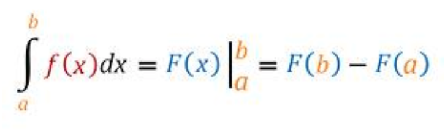

The equation below shows three items, all of which are equivalent even though they look different. You can see this from the equal signs separating the three items.

When you reach the point where you can say, “That’s obvious,” and can write down the three items from memory, you will have achieved an important facility with calculus.
The equation has been written in color to help you identify elements that are the same in each of the three items.
Typeset in LaTeX the equation showing three perspectives on a definite integral. (you can ignore the color that was used in a previous exercise.)
\beta^4 produces \(\beta^4\)._ (underscore) instead of ^ (caret).\int produces \(\int\). Give it a subscript then superscript to set the limits of integration.\left. and \right| For instance \left. g(x) \right| gives \(\left. g(x) \right|\). Use a subscript and a superscript on the | to set the values at which the function is to be evaluatedFamously, the acceleration due to gravity at the Earth’s surface is a constant: roughly -9.8 meters / sec\(^2\). But let’s write it as a function of time: \[\mbox{accel}(t) \equiv -9.8\] Galileo climbs up to the top of the Tower of Pisa, 56.7 meters above the ground. He is holding a small lead ball between thumb and forefinger. He spreads his fingers and the ball starts to fall from a standstill. How fast will the ball be going as it falls.
In this problem, we’re given information in the form of acceleration, and want to turn it into a statement about velocity. Remembering that acceleration is the derivative of velocity with respect to time, we see this as an anti-derivative problem: \[\mbox{vel}(t) \equiv \int \mbox{accel}(t) dt = \int -9.8 dt = -\int 9.8 dt\\\mbox{vel}(t) = -9.8 t + C\ .\]
Where will the ball be in 2 seconds after release (that is, at 5 seconds)? “Where” is a position question, so we need to convert the original information that we had in terms of acceleration into information in terms of position.
We’ve already used the relationship between acceleration and velocity (acceleration is \(\partial_t\) accel(t)) to compute the velocity vel(t) at any time: vel(t) \(= -9.8 t + 29.4\) and we know the units of \(t\), \(-9.8\) and \(29.4\).
Since velocity is the derivative of position with respect to time, we can compute position as the anti-derivative of velocity: \[\mbox{pos}(t) = \int \mbox{vel}(t) = \int (29.4-9.8 t) dt\\\mbox{pos}(t) = 29.4 t - 9.8 \frac{t^2}{2} + C_{pos}\] Another \(C\)! We’re writing it as \(C_{pos}\) to remind us that this \(C\) is different than the \(C\) that appeared in the vel(t) function. That \(C\) was from the accumulation of acceleration to get velocity. This \(C_{pos}\), even though it’s the same letter, is something different. Remember that \(C_{pos}\) is a reminder that pos(t) is the accumulation of velocity up until time \(t\), but we haven’t (yet) specified when the accumulation started. To calculate the \(C_{pos}\) for the pos(t) function, we need to consider the problem situation (Galileo in Pisa) and figure out some \(t_0\) for which we know \(pos(t_0)\).
What we know here is that at the release time (\(t=3\) seconds) the ball was at the top of the Tower of Pisa. So dist(3) = 56.7 meters.
Remember our conventions for notation:
In particular, take care to distinguish between these two kinds of symbolic items:
A major source of confusion for students is that \(a\) is a constant, even though we are not yet saying specifically which numerical value that constant has. Think of \(a\) as meaning “insert constant here.” In terms of derivatives …
With this in mind, turn to our three perspectives on a definite integral \[\int_a^b f(x) dx \ \ =\ \ \left. F(x) \right|_a^b\ \ =\ \ F(b) - F(a)\]
Now turn to the entities involved in the so-called “First Fundamental Theorem of Calculus.” (“Fundamental theorem” is a highfalutin way of saying something like, “This isn’t obvious at first glance, and so you should be especially careful to memorize it so that you identify it when you see it.” Another way to state it is, “Every function is the derivative of some anti-derivative.” But you knew that already, since “every function has an anti-derivative.”)
Here are the entities involved, which you’ll recognize as a slight modification of an earlier statement:
\[\partial_u \int_a^u f(x)dx \ \ =\ \ \partial_u \left. F(x) \right|_a^u \ \ = \ \ \partial_u \left(F(u) - F(a)\right) .\] Let’s look at the right-most expression \(\partial_u \left(F(u) + F(a)\right)\) and exploit the the derivative of a sum is the sum of the derivatives. So … \[\partial_u \left(F(u) + F(a)\right) = \partial_u F(u) - \partial_u F(a) = \partial_u F(u)\]
Taking the left-most and right-most expressions in the above equation, we have \[\partial_u \int_a^u f(x) dx = \partial_u F(u)\]
The equation \[\partial_u \int_a^u f(x) dx \ \ = \ \ f(u)\] means that “differentiation undoes integration” or, as we’ve been putting it, “differentiation undoes anti-differentiation.”
Work out this anti-derivative on paper.
Once you have your result, translate it into a correct R function. Use the computer name v0 for the mathematical symbol \(v_0\).
F <- makeFun()library(magrittr)
gradethis::grade_result(
fail_if( ~ !is.function(.result), message = "Your result should be in the form of a function."),
fail_if( ~ !all(correct_arguments %in% names(formals(.result))),
message = "You don't seem to have all the right argument names."),
pass_if( ~ all(.result(evaluate_at, 3, 12) ==
answer_fun(evaluate_at, 3, 12))),
fail_if( ~ TRUE, message="Correct arguments, but not the right function.")
) Now that you have the correct answer, use Latex to typeset the formula in the function here. Some Latex tips: v_0 will produce \(v_0\), while \frac{1}{2} will produce \(\frac{1}{2}\).
REMEMBER: Press the REFRESH button before copying the hash code and submitting it at the USAFA Math 142Z site
Location: CalcZ/_DailyDigitals/DailyDocuments/inst/DD-142Z-05/142Z-DD-05.Rmd DD-142Z-05